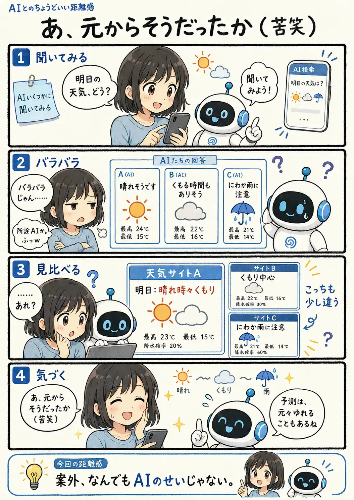

#112
元からそうだったか（苦笑）
……AIだけの話じゃなかった。

メモ
AIの答えが食い違うと、つい「AIだから」と考えたくなります。でも、天気のような未来の予測は、使うデータや予測方法、更新時刻などによって、もともと結果が少しずつ変わるものです。
AI特有の弱点もありますが、見慣れない挙動を全部AIのせいにすると、元からあった不確実さまで見失うことがあります。一度ほかの情報源も見てみると、意外なオチが待っているかもしれません。
今回の距離感
案外、なんでもAIのせいじゃない。